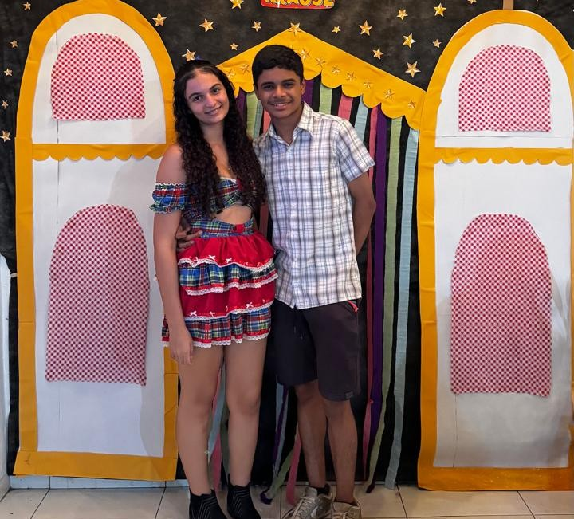

A Raposa e sua Ullva

A Raposa
Ama sua ullva, e não viveria sem o gosto de seu fruto

A Uva
Amorosa, linda, e uma ullvinha que depende da proteção de sua Rapoasa
Um romance suave entre folhas, sombras e desejos doces.
Ama sua ullva, e não viveria sem o gosto de seu fruto
Amorosa, linda, e uma ullvinha que depende da proteção de sua Rapoasa


Com certeza é por conta de: seus olhos, seu sorriso, seu rostinho, seu corpinho, seu cabelinho, sua mãozinha, seu pezinho, seu cheiro, sua pele, seu cuidado, sua preocupação, seu ciúmes muito controlado, seu amor por mim, seu amor por minha família, seu interesse em estar comigo, sua saudade, seus beijinhos, suas declarações, seus "eu te amo", seus "boa noite", suas risadas, seus aúdios, sua voz, suas cartas, seus presentes, seu modo de andar, seu modo de olhar pra mim, tudo, tudo me faz te amar.
Vou te amar hoje, te amar amanhã, te amar quando nos casarmos, te amar quando tivermos o nosso primeiro filho, te amar quando tivermos nossa primeira discurssão, te amar quando tivermos nossa primeira viagem, te amar quando tivermos nossa primeira reunião na escola de nosso filho, te amar quando tivermos no nosso primeiro aniversário de casados, te amar na primeira vez que o nosso filho andar, te amar na primeira vez que formos a igreja como família, te amar na primeira vez que ouvirmos o nosso filho cantar seu primeiro MPB, te amar quando já tivermos 50 anos e felizes vivendo como se fosse a primeira vez, te amar quando nosso filho passar na faculdade, te amar quando nosso filho nos der um netinho, te amar quando formos na nossa primeira viagem com a nossa família, te amar quando já tivermos bem velhinhos e cantar as músicas que me lembram você, e te amar até o infinito e além.
